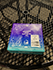
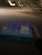
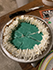
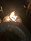
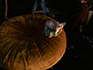
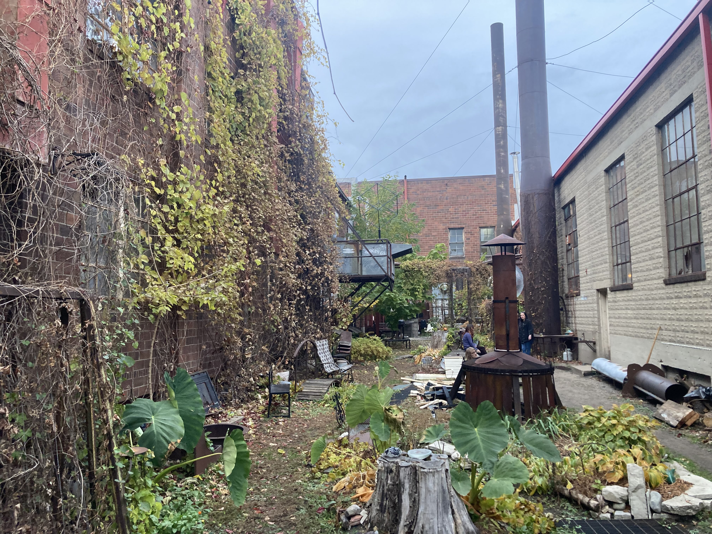
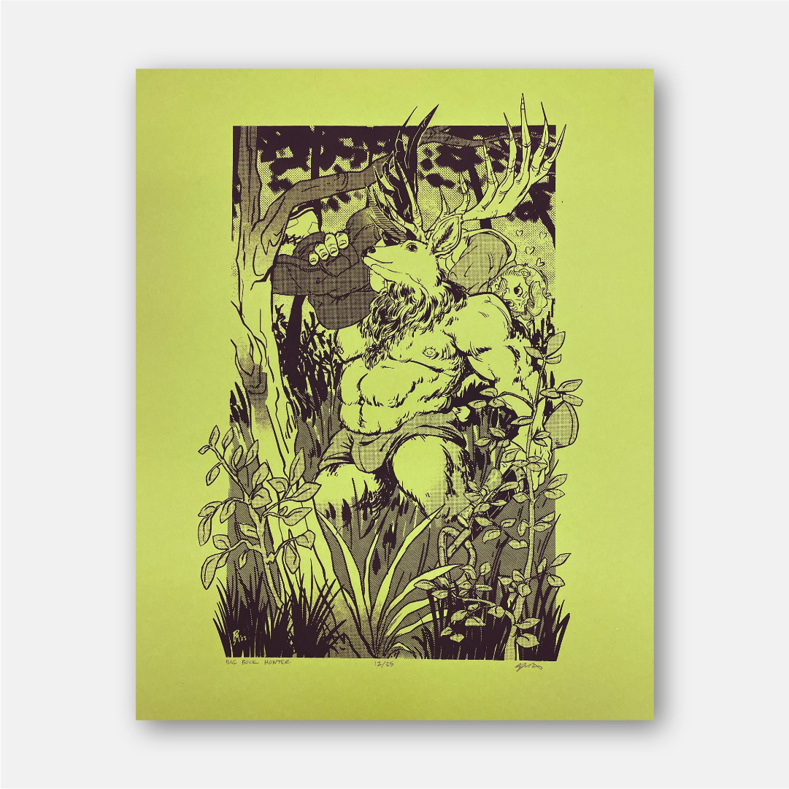

The pie, all cut up.









The pie, all cut up.





I went to the Ditch Pigeon solo show today at Mumbling Fools Mead, which is in this fucking labyrinthine studio space that used to be a General Mills plant. It was a cool location. I invited Skylar from blog095 and he actually showed up and I was awkward and flustered and ended up barely talking to him. I ended up talking with Morgan a shitton, and actually talked about Island Off Outer Darkness and Rowdy Fuckers Cop Killers ENDLESS WAR after Morgan asked. It was fucking great. And I met someone named Attica (not spelled like that). And on the walls of the bar they had furry bara prints. I asked the bartender for the source and it was an artist at the 2010 artblok itself, website here. And there was an outdoor area that we had a huge fucking fire at. I made a wooden pillow and laid down on the ground. It was, uh, fucking amazing.


The outside area of the studio, as well as the furry bara by Ryan Maticka.
I went to Taco Bell after, for my regular order of a beef chalupa with potatoes instead of beef, a beefy 5 layer burrito with chipotle sauce and potatoes instead of beef, chips and queso, and a medium baja blast, all within the $6 in-app meal deal. And that Baja Blast Pie released today. For $20. $20! But I got one. I knew I had to, or I'd always regret it. So I went inside, and I bought it, and then it was mine. And then I drove to Hayley (Pigeon) and Morgan's place and we ate the pie together. And we talked. It was a real intimate moment, we reflected on the four months of our friendship.
The pie itself was alright. Less Baja Blast than I hoped. It's very lemony limey, and while it does evoke the Baja Blast, it focuses more on the flavor immediately after the initial attack, as well as the short-term aftertaste. And I associate Baja Blasts with the initial attack and the tail end of the flavor. I also prefer mine watered down slightly. So. But it was good! It just highlights a different aspect of the flavor profile I don't usually pay attention to. I think it's giving me a new appreciation for Baja Blasts. The edge area with the white stuff and the Baja Blast Pie and the crust is sooooooooooo good.